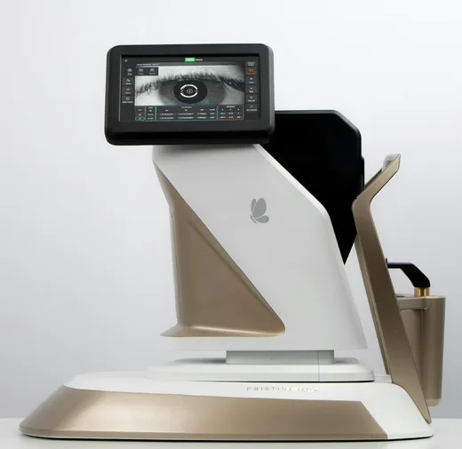

Let's bring both eyes together.
Paediatric eye care and squint treatment for children and adults, by Dr. Aloka Hedau in Kukatpally, Hyderabad. Open Monday to Saturday, 10 am to 5 pm.
మీ పిల్లల చూపు, మా బాధ్యత
Two eyes, two picturesWorking together
Scroll
Illustrative 3D images
Inside the clinic.
A calm, child-friendly space with modern diagnostics and its own operation theatre.




Dr. Aloka Hedau
DNB (Ophthalmology) · Fellow, Paediatric Ophthalmology · FICO (UK)
Senior Paediatric Ophthalmologist and Adult Strabismus Surgeon with over 20 years of focused experience. Parents describe her as kind, patient with children, and someone who listens.
- Post-graduation and fellowship at Aravind Eye Hospital, Madurai
- Nystagmus surgery training with Dr. Richard Hertle
- Affiliated with Rainbow Hospitals, Apollo Cradle, Little Star and Win Vision
Specialist care, from babies to adults.
Therapy first wherever it can work. Surgery only when it is the right answer. Drag to turn, or use the arrows.
Squint surgery
For children and adults, including paralytic squint.
Learn moreVision therapy
Training both eyes to work as a team, without surgery.
Learn more
Paediatric eye evaluation
Gentle, thorough checks for babies and children.
Learn more
Retinopathy of Prematurity
Screening and care for premature babies.
Learn moreMyopia control
Slowing short-sightedness as children grow.
Learn moreSpecial children
Cortical visual impairment, low vision aids and vision rehabilitation.
Learn moreYour first visit, step by step.
Three simple steps, the same for children and adults. Watch them play, or tap a step.

Vision check
How clearly each eye sees, near and far, with picture charts for children too young to read letters.
What families say on Google.
In their own words, from Google reviews of the clinic.
Read all reviews on Google“My entire family consults Dr. Aloka, which includes my kids, mother and mother-in-law.”
“Dr. Aloka Ma’am is very kind and helpful. She listens to the parents with all the empathy.”
“Dr. Aloka is very approachable and patient with the kids.”
Visit us
- Address
- Third Floor, Plot no 6, 9th Phase Road, near Forum Srujana Mall, KPHB Phase 6, Kukatpally, Hyderabad 500085
- Hours
- Monday – Saturday, 10 am – 5 pm · Sunday closed
- Contact
- +91 74164 27503 · dralokaseyecare@gmail.com